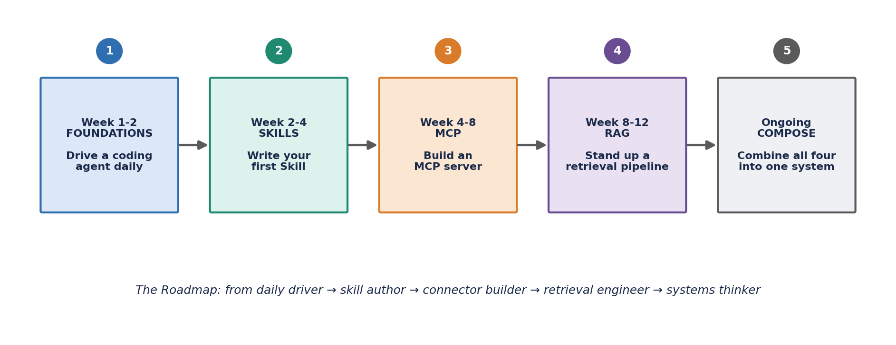
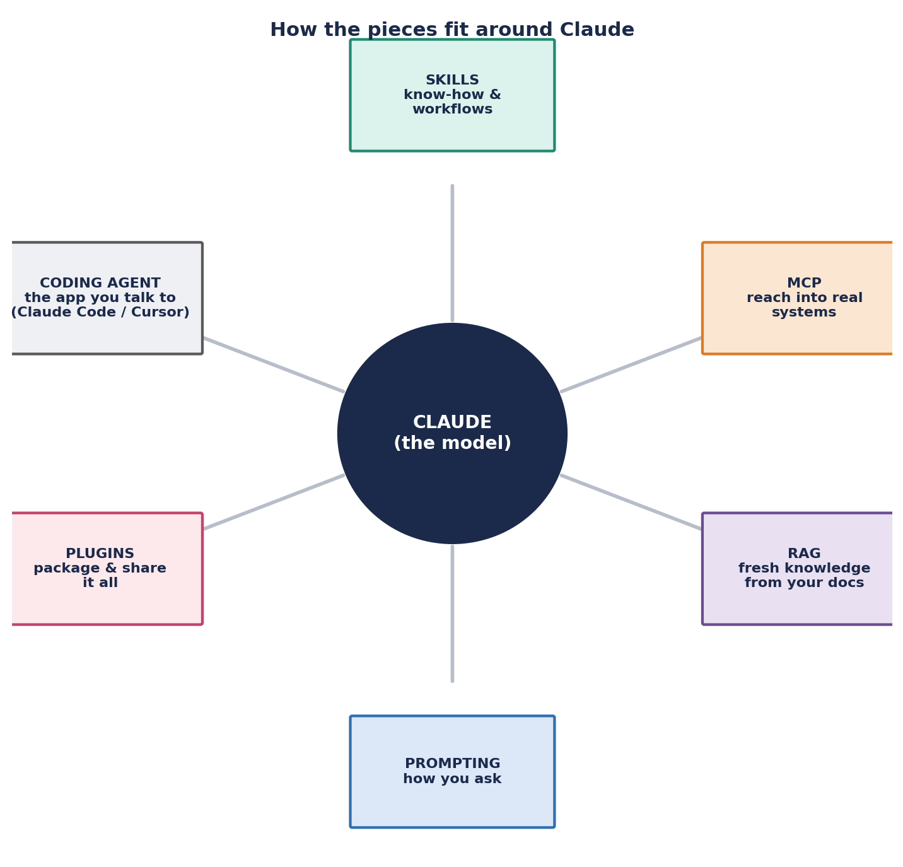

AI Engineering Roadmap
Overview
This is the order-of-operations page for the rest of the AI section. Before treating Claude Skills, MCP, and RAG as standalone topics, it helps to see how they actually stack on top of each other in practice — this is how to actually get good at this, in order. There are five things worth getting good at, in sequence: driving a coding agent, writing Skills, building an MCP server, standing up a RAG pipeline, and finally composing all of it into one working system. The timeline below (Weeks 1–2, 2–4, 4–8, 8–12, and ongoing) is a reasonable default pace — compress it if you're moving fast, stretch it if you're doing this alongside a full-time job. Treat each stage's "ready for the next stage" criterion as the real gate, not the calendar: moving on before a stage has genuinely clicked just means hitting the same gaps one stage later, with more moving parts to debug at once.
The Five-Stage Roadmap
Each stage below lists its goal, what to actually practice, a worked example where the source material gives one, and the signal that you're genuinely ready to move on. Stages 1–4 build directly on each other: Skills are easier to write well once you're fluent driving an agent day to day, MCP is more approachable once you've felt what it's like to hand a whole task to that agent, and RAG's data-pipeline thinking benefits from already being comfortable wrapping a real system as a callable tool. Stage 5 doesn't really end — it's the ongoing practice of combining everything else once the basics are second nature.

Stage 1: Foundations (Weeks 1–2)
Goal: get fluent driving one agentic coding tool every day — not autocomplete, full task delegation.
- Pick one tool (Claude Code or Cursor) and use it for every coding task, even small ones.
- Practice delegating whole tasks: "add a feature," "fix this failing test," "refactor this module" — not just "write this one function."
- Learn to read diffs quickly and give short, specific correction feedback instead of re-explaining the whole task.
- Try both a CLI agent (terminal-native, full autonomy) and an IDE-embedded agent (fast, in-flow) to feel the difference.
Ready for the next stage: you default to delegating tasks rather than writing code line-by-line, and you can spot when the agent is wrong within seconds of reading its output.
Stage 2: Skills (Weeks 2–4)
Goal: package a workflow you repeat often into a reusable Skill instead of re-explaining it every time.
- Identify one workflow you explain to the AI repeatedly (a coding convention, a report format, a team process).
- Write it as a
SKILL.mdfile with clear frontmatter (name + description) — see the Claude Skills page for the full walkthrough. - Test that Claude actually triggers the Skill on the right request, and refine the description if it doesn't.
Ready for the next stage: you have at least one working custom Skill, and you understand why the description field is the single most important part of a Skill.
Stage 3: MCP (Weeks 4–8)
Goal: build a small MCP server that exposes one real tool or internal API to Claude. This is the highest-leverage skill right now — it's how agents stop being chatbots and start touching real systems.
- Pick one internal system with a simple read operation (a database table, an internal API, a wiki search).
- Wrap it as an MCP server using an official SDK (Python, TypeScript, or others) — a handful of JSON-RPC "tools" is enough to start.
- Connect it to Claude Code or Claude Desktop and confirm Claude can call it correctly and handle errors gracefully.
- Read up on auth (OAuth 2.1 with PKCE is now standard for remote MCP servers) before exposing anything beyond your own laptop.
Ready for the next stage: you've built and connected one working MCP server end-to-end, even a trivial one.
Stage 4: RAG (Weeks 8–12)
Goal: stand up a basic retrieval pipeline over a real document set, then experiment with more adaptive, "agentic" retrieval.
- Pick a document set you actually care about (team docs, a PDF handbook, a codebase's markdown files).
- Chunk it, embed it, and load it into a vector store using LlamaIndex or LangChain — both have simple starter templates.
- Ask questions against it and check whether the retrieved chunks are actually relevant before trusting the answer.
- Once basic RAG feels easy, try agentic RAG: let the model decide what to search for and re-query if the first pass wasn't enough.
Ready for the next stage: you can explain, for any wrong answer your pipeline gives, whether the bug is in retrieval (wrong chunks) or generation (right chunks, bad reasoning).
Stage 5: Compose (Ongoing)
Goal: combine Skills (judgment and workflow), MCP (reach into real systems), and RAG (knowledge) into one working system for a real problem you have. This is the stage that never really finishes — it's where you keep operating once the basics are second nature.
- Package your Skills and MCP servers together into a Claude Code Plugin so they travel as one unit (see the Claude Plugins page).
- Write your prompts and system instructions deliberately rather than ad hoc.
- Revisit Stage 3 and Stage 4 periodically — MCP and RAG tooling are both moving fast, and today's best practice is often outdated within months.
Every stage above is really just building fluency with one piece of a single connected system — the roadmap's endpoint isn't five separate skills practiced in isolation, it's the ability to move fluidly between all of them around the same model.

Quick Glossary
| Term | Plain-language meaning |
|---|---|
| LLM | A model trained to predict text, underlying tools like Claude |
| Agent | An LLM that can take actions (tools, files, code) in a loop, not just reply |
| Skill | A packaged instruction set Claude loads automatically when relevant |
| MCP | The standard protocol for connecting an AI to external tools & data |
| RAG | Retrieving real documents to ground an answer before generating it |
| Embedding | A vector of numbers representing meaning, used for similarity search |
| Vector database | A database built to search embeddings by similarity, fast |
| Plugin | A shareable bundle of Skills, agents, hooks, and MCP configs |
| Prompt | The instructions you give the model for a specific task or conversation |
| Hallucination | A confident but false statement generated by the model |
| Token | The basic chunk of text a model reads and writes |
| Context window | The maximum amount of text a model can consider at once |
Further Reading
- docs.claude.com — official Claude Platform docs (Skills, tool use, prompting)
- code.claude.com/docs — Claude Code docs (Skills, Plugins, hooks, MCP)
- modelcontextprotocol.io — the MCP specification and SDKs
- github.com/anthropics/skills — Anthropic's open-source Skills repository
- Anthropic's prompt engineering guide, linked from docs.claude.com